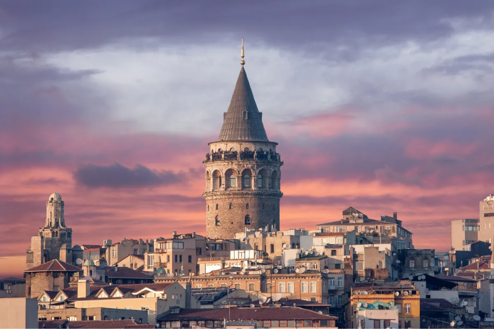

Galata Tower
Galata Tower is a medieval stone tower in the Galata/Karaköy quarter of Istanbul, Turkey, just to the north of the Golden Horn's junction with the Bosphorus. One of the city's most striking landmarks, it is a high, cone-capped cylinder that dominates the skyline and offers a panoramic vista of Istanbul's historic peninsula and its environs.
The nine-story tower is 66.90 meters (219.5 ft) (62.59 m (205.3 ft) without the ornament on top, 51.65 m (169.5 ft) at the observation deck), and was the city's tallest structure when it was built. The elevation at ground level is 35 meters (115 ft) above sea-level. The tower has an external diameter of 16.45 meters (54.0 ft) at the base, an 8.95 meters (29.4 ft) diameter inside, and walls that are 3.75 meters (12.3 ft) thick.
The tower was built as Christea Turris (Tower of Christ) in 1348 during an expansion of the Genoese colony in Constantinople. It was the apex of the fortifications surrounding the Genoese citadel of Galata. The current tower should not be confused with the old Tower of Galata, an original Byzantine tower, named Megalos Pyrgos, which controlled the northern end of the massive sea chain that closed the entrance of the Golden Horn. That tower was on a different site and was largely destroyed during the Fourth Crusade in 1204.